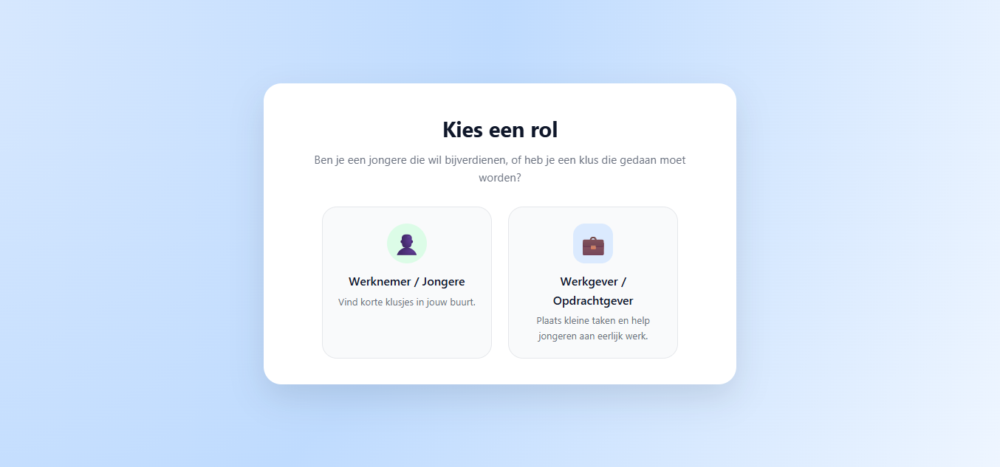

MicroJobs.sr
MicroJobs.sr was a group project that I worked on with other students at UNASAT.
The website was created for two types of users: people searching for jobs and people or businesses offering jobs.
My contribution: Front-end development
Technologies used: HTML, CSS and JavaScript
